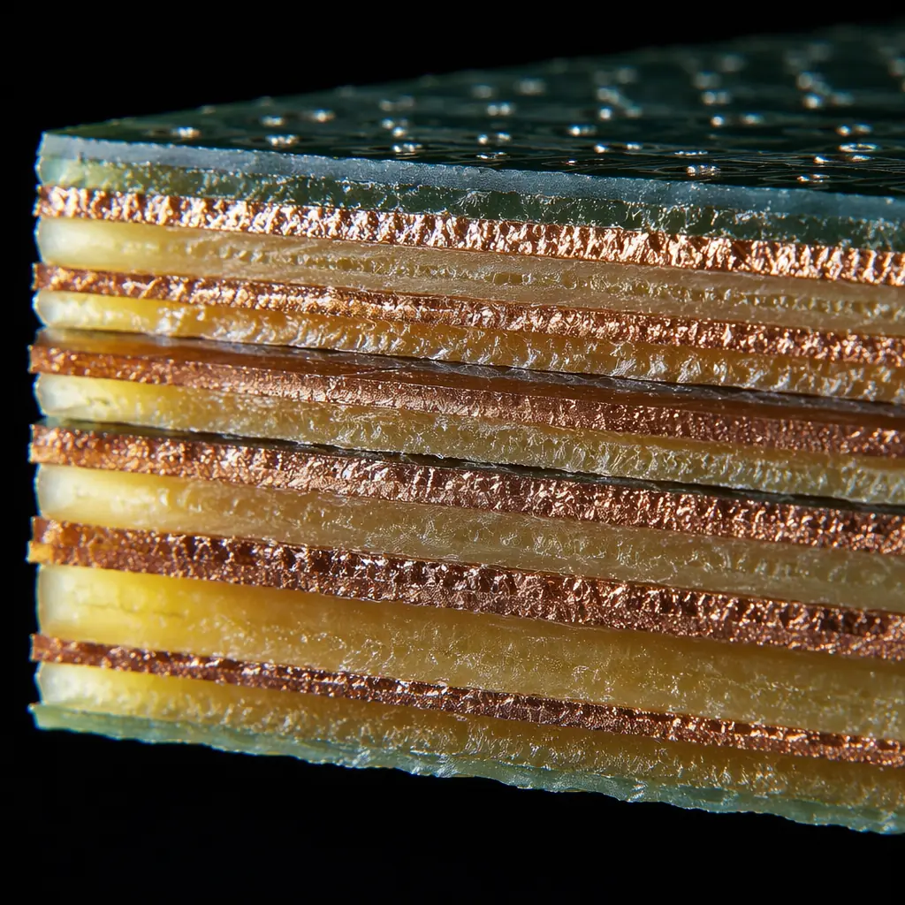
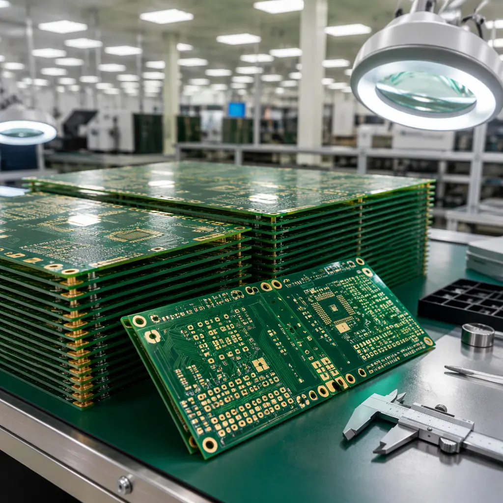

When a procurement manager asks "how long will this take," they are not asking about factory throughput. They are asking about every hour between the PO and the delivery dock — engineering review, material procurement, tooling, inner layer fabrication, lamination, drilling, plating, outer layer imaging, solder mask, surface finish, electrical test, final inspection, and shipping. A standard 4-layer PCB from a Shenzhen factory typically takes 15-20 business days end-to-end. The same board, with the same specifications, can arrive in 7 days — if you know which levers to pull. This guide covers every one of them.
Why PCB Lead Times Vary — The 6 Components That Add Up
Every PCB order, regardless of complexity, passes through six time buckets. Understanding which bucket dominates your order is the first step to cutting it:
Engineering Review (1-3 days)
Your Gerber files, drill files, and fabrication notes are reviewed by a CAM engineer before anything touches copper. Incomplete or ambiguous specs trigger questions — and every email exchange adds 24 hours. Fix: Include a fabrication drawing with stackup, impedance targets, and material callouts. A good drawing eliminates 80% of engineering queries on first pass.
Material Procurement (1-7 days)
Standard FR-4 (TG 130-140) is always in stock. But specify TG 170, halogen-free, or a specific laminate brand (Isola, Rogers, Panasonic) and the factory may need to order it. Procurement impact: a Rogers 4350B stackup can add 5-7 days of material lead time. Know this before you commit to a material spec.
Inner Layer Fabrication (2-4 days)
Inner layer imaging, etching, AOI inspection, and lamination. Layer count is the dominant variable: a 2-layer board passes through this stage once; a 12-layer board passes through it 6 times. Design lever: can you achieve the same functionality in 8 layers instead of 12?
Drilling and Plating (1-3 days)
Drill count, hole sizes, and aspect ratios drive time. A board with 2,000 holes takes longer than one with 200. Blind and buried vias add separate drill + plate cycles. Back-drilling adds yet another step. Design lever: reduce via count, avoid unnecessary blind/buried vias.
Solder Mask, Surface Finish, and Silkscreen (1-2 days)
Standard green solder mask + HASL (lead-free) is the fastest combination. Specialty solder mask colors (black, red, blue) or ENIG/ENEPIG surface finishes add time — the line needs to be configured differently. Trade-off: is the aesthetic or performance gain worth the extra day?
Electrical Test and Final Inspection (1-2 days)
Flying probe test is fast for prototypes. Bed-of-nails fixtures take time to fabricate but test faster at volume. IPC Class 3 requires 100% netlist test — non-negotiable but plan for it. Don't skip test to save time. A day saved here costs weeks in rework later.
Design Decisions That Cut Days Off Your Timeline
The fastest way to reduce lead time is not negotiation — it is design hygiene. Factories do not charge for DFM review, but they do charge (in time) for the back-and-forth that follows a messy file set.
Five design decisions with outsized lead time impact:
Standardize Your Stackup
Every factory has a library of pre-approved stackups — laminate thicknesses and prepreg combinations they keep in inventory. If your impedance calculator spits out a 0.127mm prepreg that no one stocks, the factory substitutes it. That substitution triggers an engineering change notice, a re-simulation, and your approval. Fix: ask the factory for their standard stackup table before you route the board. Design to what they already have.
Use Standard Drill Sizes
0.30mm, 0.35mm, 0.40mm — these are standard. 0.33mm or 0.37mm? Non-standard, requires a special drill bit order. Every non-standard drill size adds time. Fix: specify all holes to 0.05mm increments (0.30, 0.35, 0.40, etc.) and avoid anything below 0.20mm unless mechanically necessary.
Keep Copper Balanced
Uneven copper distribution — a solid ground plane on layer 2 and sparse routing on layer 3 — causes warpage during lamination. The factory compensates by adjusting prepreg flow, which adds process time. Fix: fill empty areas with copper pours (hatched or solid) to balance copper weight across the stack.
Specify Surface Finish by Function, Not Habit
ENIG adds 1-2 days over HASL. Immersion silver adds 1 day. ENEPIG adds 2-3 days and introduces a separate plating chemistry. Decision rule: if your board has fine-pitch BGA (0.5mm or below), you need ENIG for coplanarity. If you are assembling through-hole connectors and SOIC packages, HASL (lead-free) is faster and cheaper. Pick the finish your assembly actually requires.
Panelize Before You Submit
If you submit a single board and the factory panels it — which they will — you are adding an extra engineering step. A pre-panelized design (with tooling rails, fiducials, and breakaway tabs or V-score lines) skips this step entirely. Fix: panelize in your CAD tool and include the panel Gerber as a separate layer. Note the panelization method (V-score or tab-route) in your fab drawing.

Material Selection: The Silent Lead Time Killer
In 2024-2026, material availability has become the single largest variable in PCB lead time. A board designed around a laminate that is on allocation can sit in queue for weeks while the factory waits for delivery.
The availability hierarchy (Shenzhen supply chain, 2026):
| Material | Availability | Typical Lead Time Impact |
|---|---|---|
| FR-4 TG 130-140 (Shengyi, Kingboard) | Always in stock | 0 days |
| FR-4 TG 170-180 | Stocked, high volume | 0-1 day |
| Halogen-free FR-4 | Moderate stock | 1-2 days |
| High-speed (Megtron 6, TU-872 SLK) | Limited, allocation-constrained | 3-7 days |
| RF (Rogers 4350B, 4003C) | Imported, lead time varies | 5-14 days |
| PTFE-based (Rogers 5880, Taconic) | Special order only | 10-21 days |
Procurement strategy: If you are transitioning a design from prototyping to production and your prototype used a Rogers stackup "because the RF engineer specified it," ask whether a lower-loss FR-4 (like TU-872 SLK or IT-968) can meet the same insertion loss budget. The answer is often yes for frequencies below 10 GHz — and the lead time drops from weeks to days.
Quick-Turn vs Standard: When to Pay the Premium
Quick-turn services promise 24-72 hour fabrication. The economics are brutal: a standard 4-layer board that costs $2.50/unit at 1,000 pieces might cost $18/unit on a 48-hour quick-turn. That premium is 720% — but it makes sense in specific scenarios.
When quick-turn justifies its cost:
Prototype Validation
You need 5 boards to validate a new design before committing to a 5,000-unit production run. Paying $90 for quick-turn boards that save 2 weeks of engineering idle time is a rounding error compared to the cost of a delayed product launch.
Production Line Bridge
Your production run arrives in 3 weeks but you exhausted safety stock today. 50 quick-turn boards bridge the gap and keep the SMT line running. The cost of an idle SMT line ($2,000-5,000/day) dwarfs the quick-turn premium.
Regular Production Orders
Using quick-turn as your default production mode is a procurement failure, not a strategy. If you are repeatedly paying quick-turn premiums, the root cause is forecasting or supplier management — not PCB fabrication speed. Fix the pipeline, not the order type.
The Production Queue: How Factory Scheduling Affects Your Order
Even after engineering review, material procurement, and process steps, your order sits in a queue. Understanding how factories schedule work is the difference between a 7-day and 21-day lead time for identical boards.
Three scheduling realities that procurement managers should know:
1. Panel utilization drives priority. A factory's production planner looks at your order and asks: does this fill a panel efficiently? An order that fills exactly one panel (e.g., your board dimensions × array count = 510 × 410mm, the standard Shenzhen panel size) gets scheduled faster than one that leaves 30% of the panel unused. Action: design your board dimensions to panelize efficiently. Standard panel size in Shenzhen is typically 510 × 410mm or 610 × 510mm — ask your factory which they use.
2. "Rush" is a queue position, not a process change. When you pay for expedited service, the factory does not run your boards through a faster machine. They move your job to the front of the queue at each process step. This means your 2-day quick-turn board skips ahead of 50 other orders waiting for drilling. Implication: during peak season (August-November for consumer electronics ramp), even "rush" orders face queue congestion because everyone is rushing.
3. Chinese holidays create predictable bottlenecks. Chinese New Year (January/February) and Golden Week (October 1-7) shut down factories for 1-2 weeks. The two weeks before each holiday see a surge of rush orders as procurement teams scramble to get boards out before the shutdown. Action: place orders at least 3 weeks before these holidays, or plan for a 2-week gap.
How to Write an RFQ That Gets Prioritized
Factories receive dozens of RFQs daily. Most are generic: "please quote 4-layer PCB, 1,000 pcs." The ones that get fast responses share a common structure. Here is the RFQ format that Shenzhen factories actually prioritize:
Complete Spec in the First Message
Layer count, dimensions, material (with brand and TG), copper weight (inner and outer), surface finish, solder mask color, min trace/space, min hole size, impedance requirements, and IPC class. Attach Gerber files and a fabrication drawing. Every missing field requires an email — and every email costs a day.
State Your Timeline Upfront
"We need 50 prototypes in 7 days and 5,000 production units in 4 weeks." This tells the factory: (a) you have a real project, not tire-kicking; (b) you understand the difference between prototype and production timelines; (c) you are worth prioritizing because volume follows.
Include Annual Volume Estimates
"Estimated 50,000 units/year across 5 SKUs." Even if the first order is 500 pieces, the factory sees the long-term value and allocates engineering resources accordingly. A factory that quotes you for 500 pieces knowing there are 50,000 behind it will give you better pricing and faster turnaround than one quoting a one-off.
Ask for a Production Slot, Not Just a Quote
"Can you reserve a production slot for the week of August 10?" This is the procurement equivalent of a restaurant reservation. The factory commits to capacity before you commit to the order. Most Shenzhen factories will hold a slot for 48-72 hours without a PO — use this window to finalize internal approvals.

The Lead Time Reduction Checklist
If you apply every lever in this guide, here is the cumulative time reduction for a typical 4-layer PCB order:
| Lever | Time Saved | Effort |
|---|---|---|
| Complete fabrication package (no back-and-forth) | 2-3 days | Low — one-time discipline |
| Standard laminate (TG 140 FR-4 instead of specialty) | 2-5 days | Medium — requires engineering review |
| Standard stackup (factory-pre-approved) | 1-2 days | Low — ask for stackup table |
| Pre-panelized design | 1 day | Low — use CAD panelization tool |
| HASL instead of ENIG (when acceptable) | 1-2 days | Medium — assembly compatibility check |
| 7-10 day service (sweet spot) | 5-10 days | Low — request explicitly in RFQ |
| Reserve production slot upfront | 2-5 days | Low — ask during RFQ |
| Total potential reduction | 14-28 days |
The gap between a 4-week and a 1-week lead time is not factory capability — it is procurement process. A factory with 8 SMT lines and in-house CNC drilling can fabricate a 4-layer board in 48 hours of machine time. The remaining 18 days are engineering queries, material sourcing, and queue position. Eliminate those, and the timeline collapses.